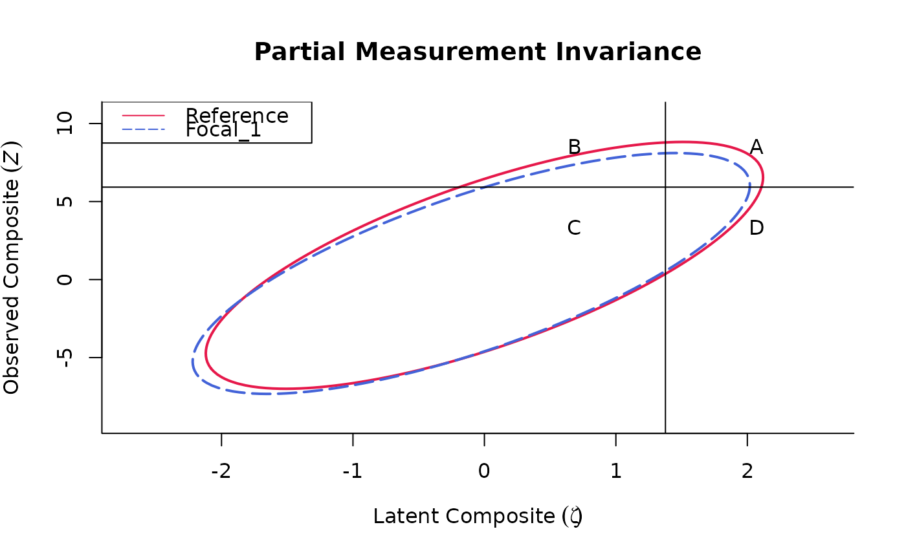
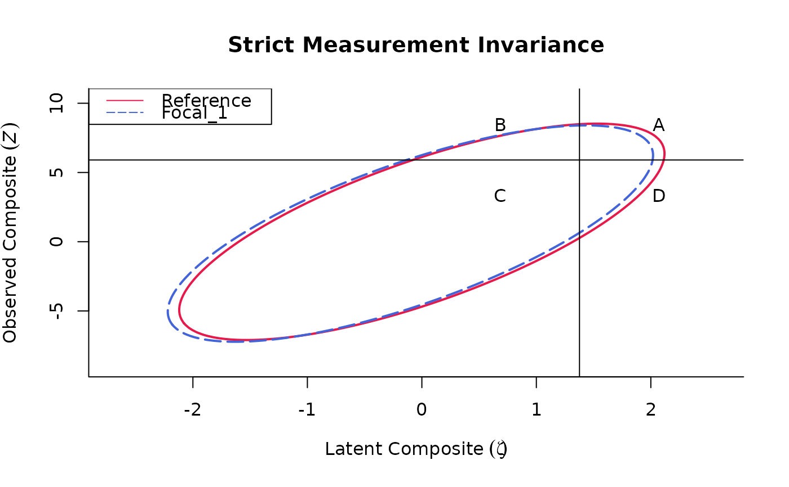
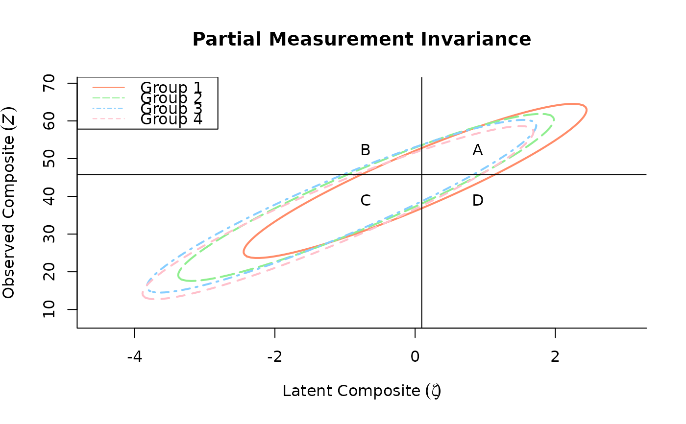
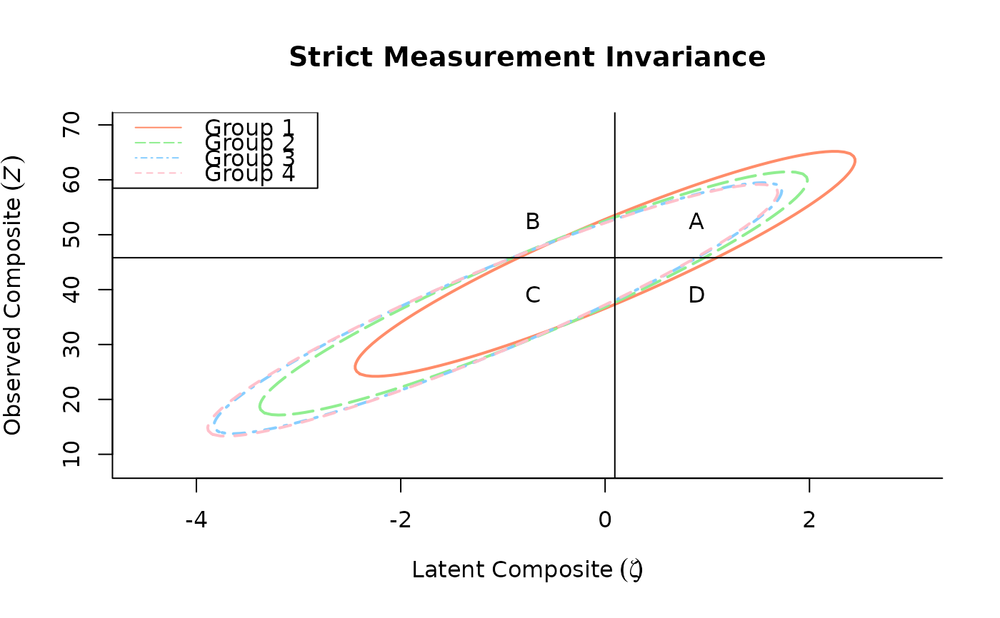

Evaluating selection accuracy for two or more groups based on the MCAA Framework
PartInv.RdPartInv, PartInvMulti_we evaluates partial measurement invariance
using the multidimensional classification accuracy analysis
(Lai & Zhang, 2022), which is an extension of Millsap & Kwok's (2004)
approach.
Usage
PartInv(
propsel = NULL,
cut_z = NULL,
weights_item = NULL,
weights_latent = NULL,
alpha,
psi,
lambda,
theta,
nu,
pmix = 0.5,
pmix_ref = 0.5,
plot_contour = FALSE,
show_mi_result = FALSE,
labels = NULL,
kappa_r = NULL,
kappa_f = kappa_r,
alpha_r = NULL,
alpha_f = alpha_r,
phi_r = NULL,
phi_f = phi_r,
psi_r = NULL,
psi_f = psi_r,
lambda_r = NULL,
lambda_f = lambda_r,
tau_r = NULL,
tau_f = tau_r,
nu_r = NULL,
nu_f = nu_r,
Theta_r = NULL,
Theta_f = Theta_r,
...
)
PartInvMulti_we(...)Arguments
- propsel
Proportion of selection. If missing, computed using
cut_z.- cut_z
Pre-specified cutoff score on the observed composite. This argument is ignored when
propselhas input.- weights_item
A vector of item weights.
- weights_latent
A vector of latent factor weights.
- alpha
A list of length
gcontaining1 x dlatent factor mean vectors wheregis the number of groups anddis the number of latent dimensions. The first element is assumed to belong to the reference group.- psi
A list of length
gcontainingd x dlatent factor variance-covariance matrices wheregis the number of groups anddis the number of latent dimensions. The first element is assumed to belong to the reference group.- lambda
A list of length
gcontainingn x dfactor loading matrices wheregis the number of groups,dis the number of latent dimensions, andnis the number of items in the scale. The first element is assumed to belong to the reference group.- theta
A list of length
gcontaining1 x nvectors orn x nmatrices of unique factor variances and covariances, wheregis the number of groups andnis the number of items in the scale. The first element is assumed to belong to the reference group.- nu
A list of length
gcontaining1 x nmeasurement intercept vectors wheregis the number of groups andnis the number of items in the scale. The first element is assumed to belong to the reference group.- pmix
List of length
gcontaining the mixing proportions of each group. IfNULL, defaults to1/gfor each group (i.e., the populations have equal size).- plot_contour
Logical; whether the contour of the populations should be plotted;
TRUEby default.- show_mi_result
If
TRUE, perform selection accuracy analysis for both the input parameters and the implied parameters based on a strict invariance model, with common parameter values as weighted averages of the input values usingpmix.- labels
A character vector with
gelements to label the reference and focal groups on the plot, wheregis the number of groups. If not provided, groups are labeled automatically as 'Reference' (for the first group) and 'Focal_1' through 'Focal_(g-1)', wheregis the number of groups.- alpha_r, alpha_f, nu_r, nu_f, Theta_r, Theta_f, psi_r, psi_f, lambda_r, lambda_f, phi_r, phi_f, tau_r, tau_f, kappa_r, kappa_f, pmix_ref
Deprecated; included only for backward compatibility. When comparing two groups, parameters with the '_r' suffix refer to the reference group while parameters with the '_f' suffix refer to the focal group.
- ...
Other arguments passed to the
contourfunction.
Value
The output will be a list of six elements and a plot if
plot_contour == TRUE:
- propsel
Proportion selected.
- cutpt_xi
Cut point on the latent scale (xi).
- cutpt_z
Cut point on the observed scale (Z).
- summary
A
8 x (g + g - 1)table, with columns representing the reference andg - 1focal groups, and the expected results if the latent distribution ofg - 1focal group match the reference group. The rows represent probabilities of true positive (A), false positive (B), true negative (C), false negative (D); proportion selected, success ratio, sensitivity, and specificity.- bivardata
List of length
5containing1 x gvectors of latent and observed means, standard deviations, and covariances computed for each groups.- ai_ratio
A list of length
g - 1containing the Adverse Impact (AI) ratio computed for each focal group. A result less than 80% may be considered evidence of adverse impact.
If show_mi_result = TRUE, the returned list will have the
additional elements below:
- propsel_mi
Proportion selected under strict invariance.
- cutpt_xi_mi
Cut point on the latent scale (xi) under strict invariance.
- cutpt_z_mi
Cut point on the observed scale (Z) under strict invariance.
- summary_mi
A
8 x (g + g - 1)table, with columns representing the reference andg - 1focal groups and the expected results if the latent distributions ofg - 1focal groups match the reference group, under strict invariance. The rows represent probabilities of true positive (A), false positive (B), true negative (C), false negative (D); proportion selected, success ratio, sensitivity, and specificity.- bivardata_mi
List of length
5containing1 x gvectors of latent and observed means, standard deviations, and covariances computed for each group under strict invariance.
Examples
# Two groups, single dimension
PartInv(propsel = .30,
weights_item = c(1, 1, 1, 1),
weights_latent = 1,
alpha = list(0, 0),
psi = list(1, 1),
lambda = list(c(1, 1, 1, 1), c(1, 1, 1, 1)),
nu = list(c(1, 1, 1, 2), c(1, 1, 1, 1)),
theta = list(diag(1, 4), diag(1, 4)),
labels = c("Female", "Male"),
show_mi_result = TRUE)
#> Partial invariance results:
#>
#> Proportion selected: 0.3
#> Cutpoint on the latent scale (xi): 0.524
#> Cutpoint on the observed scale (Z): 6.86
#> Adverse impact ratio (reference group: 'Female'):
#> Male
#> 0.771
#>
#> Classification Accuracy Indices:
#> Female Male E_R(Male)
#> True Positive 0.252 0.217 0.217
#> False Positive 0.087 0.045 0.045
#> True Negative 0.613 0.655 0.655
#> False Negative 0.048 0.083 0.083
#> Proportion Selected 0.339 0.261 0.261
#> Success Ratio 0.743 0.829 0.829
#> Sensitivity 0.839 0.722 0.722
#> Specificity 0.876 0.936 0.936
#>
#>
#> Strict invariance results:
#>
#> Proportion selected: 0.3
#> Cutpoint on the latent scale (xi): 0.524
#> Cutpoint on the observed scale (Z): 6.845
#>
#> Classification Accuracy Indices:
#> Female Male
#> True Positive 0.236 0.236
#> False Positive 0.064 0.064
#> True Negative 0.636 0.636
#> False Negative 0.064 0.064
#> Proportion Selected 0.300 0.300
#> Success Ratio 0.786 0.786
#> Sensitivity 0.786 0.786
#> Specificity 0.908 0.908
# Two groups, two dimensions
lambda_matrix <- matrix(0, nrow = 5, ncol = 2)
lambda_matrix[1:2, 1] <- c(.322, .655)
lambda_matrix[3:5, 2] <- c(.398, .745, .543)
PartInv(propsel = .05,
weights_latent = c(0.5, 0.5),
alpha = list(c(0, 0), c(-0.3, 0.1)),
psi = list(matrix(c(1, 0.5, 0.5, 1), nrow = 2),
matrix(c(1, 0.5, 0.5, 1), nrow = 2)),
lambda = list(lambda_matrix, lambda_matrix),
nu = list(c(.225, .25, .010, .30, .125),
c(.225, -.05, .240, -.025, .125)),
theta = list(diag(1, 5), c(1, .95, .80, .75, 1)),
plot_contour = TRUE, show_mi_result = TRUE)


#> Partial invariance results:
#>
#> Proportion selected: 0.05
#> Cutpoint on the latent scale (xi): 1.377
#> Cutpoint on the observed scale (Z): 5.925
#> Adverse impact ratio (reference group: 'Reference'):
#> Focal_1
#> 0.714
#>
#> Classification Accuracy Indices:
#> Reference Focal_1 E_R(Focal_1)
#> True Positive 0.024 0.017 0.021
#> False Positive 0.036 0.023 0.023
#> True Negative 0.908 0.933 0.921
#> False Negative 0.032 0.027 0.035
#> Proportion Selected 0.060 0.040 0.043
#> Success Ratio 0.404 0.426 0.475
#> Sensitivity 0.436 0.384 0.367
#> Specificity 0.962 0.976 0.976
#>
#>
#> Strict invariance results:
#>
#> Proportion selected: 0.05
#> Cutpoint on the latent scale (xi): 1.377
#> Cutpoint on the observed scale (Z): 5.903
#>
#> Classification Accuracy Indices:
#> Reference Focal_1
#> True Positive 0.023 0.019
#> False Positive 0.029 0.029
#> True Negative 0.915 0.927
#> False Negative 0.033 0.025
#> Proportion Selected 0.052 0.048
#> Success Ratio 0.436 0.388
#> Sensitivity 0.405 0.422
#> Specificity 0.969 0.969
# Multiple groups, multiple dimensions
lambda_matrix <- matrix(0, nrow = 15, ncol = 1)
lambda_matrix[1:15, 1] <- c(0.68, 0.79, -0.39, 0.74, 0.59, 0.46, 0.78, -0.30,
0.59, 0.59, 0.64, 0.66, 0.59, 0.63, 0.64);
nu_matrix <- nu_matrix1 <- nu_matrix2 <- nu_matrix3 <-
matrix(0, nrow = 15, ncol = 1)
nu_matrix[1:15, 1] <- c(3.6, 3.1, 2.7, 2.9, 2.5, 2.1, 3.45, 2.62, 3.2, 2.84,
3.51, 3.26, 2.45, 3.39, 2.47);
nu_matrix1[1:15, 1] <- c(3.9, 3.1, 2.7, 2.9, 2.5, 2.1, 3.45, 2.62, 3.2, 2.84,
3.51, 3.26, 2.45, 3.76, 2.81);
nu_matrix2[1:15, 1] <- c(3.6, 3.1, 2.7, 2.9, 2.5, 2.1, 3.45, 2.62, 3.6, 3.18,
3.51, 3.54, 2.45, 3.39, 2.81);
nu_matrix3[1:15, 1] <- c(3.6, 3.1, 2.7, 2.6, 2.5, 2.1, 3.45, 2.62, 3.2, 2.84,
3.51, 3.26, 2.45, 3.39, 2.81);
theta_matrix <- c(0.35, 0.62, 0.83, 0.61, 0.81, 0.87, 0.39, 1.05, 0.84, 0.92,
0.36, 0.66, 0.8, 0.66, 0.9);
theta_matrix1 <- c(0.61, 0.62, 0.83, 0.61, 0.81, 0.5, 0.7, 1.05, 0.84, 0.92,
0.61, 0.66, 0.8, 0.54, 0.9);
theta_matrix2 <- c(0.61, 0.62, 0.826, 0.61, 0.81, 0.87, 0.5, 1.05, 0.84,
0.92, 0.61, 0.66, 0.8, 0.66, 0.9);
theta_matrix3 <- c(0.61, 0.62, 0.826, 0.61, 0.81, 0.5, 0.7, 1.05, 0.84, 0.92,
0.61, 0.66, 0.8, 0.66, 0.9);
PartInv(propsel = 0.25, pmix = c(1/4, 1/4, 1/4, 1/4),
alpha = list(0, -0.70, -1.05, -1.10), psi = list(1, 1.2, 1.29, 1.3),
nu = list(nu_matrix, nu_matrix1, nu_matrix2, nu_matrix3),
lambda = list(lambda_matrix, lambda_matrix, lambda_matrix,
lambda_matrix),
theta = list(theta_matrix, theta_matrix1, theta_matrix2,
theta_matrix3),
plot_contour = TRUE, show_mi_result = TRUE,
labels = c("Group 1", "Group 2", "Group 3", "Group 4"),
custom_colors = c("salmon1", "lightgreen", "skyblue1", "pink")
)


#> Partial invariance results:
#>
#> Proportion selected: 0.25
#> Cutpoint on the latent scale (xi): 0.095
#> Cutpoint on the observed scale (Z): 45.754
#> Adverse impact ratio (reference group: 'Group 1'):
#> Group.2 Group.3 Group.4
#> 1.114 1.153 1.005
#>
#> Classification Accuracy Indices:
#> Group 1 Group 2 Group 3 Group 4 E_R(Group 2) E_R(Group 3)
#> True Positive 0.376 0.196 0.132 0.111 0.401 0.408
#> False Positive 0.045 0.057 0.053 0.030 0.068 0.078
#> True Negative 0.493 0.710 0.790 0.823 0.470 0.460
#> False Negative 0.086 0.038 0.024 0.036 0.061 0.054
#> Proportion Selected 0.421 0.252 0.185 0.141 0.469 0.486
#> Success Ratio 0.894 0.776 0.714 0.789 0.855 0.840
#> Sensitivity 0.814 0.837 0.844 0.757 0.867 0.882
#> Specificity 0.917 0.926 0.937 0.965 0.874 0.855
#> E_R(Group 4)
#> True Positive 0.376
#> False Positive 0.047
#> True Negative 0.491
#> False Negative 0.086
#> Proportion Selected 0.423
#> Success Ratio 0.889
#> Sensitivity 0.814
#> Specificity 0.913
#>
#>
#> Strict invariance results:
#>
#> Proportion selected: 0.25
#> Cutpoint on the latent scale (xi): 0.095
#> Cutpoint on the observed scale (Z): 45.806
#>
#> Classification Accuracy Indices:
#> Group 1 Group 2 Group 3 Group 4
#> True Positive 0.390 0.189 0.125 0.117
#> False Positive 0.057 0.047 0.038 0.037
#> True Negative 0.481 0.719 0.805 0.816
#> False Negative 0.072 0.045 0.032 0.030
#> Proportion Selected 0.447 0.237 0.163 0.154
#> Success Ratio 0.872 0.800 0.766 0.760
#> Sensitivity 0.844 0.809 0.795 0.793
#> Specificity 0.894 0.938 0.955 0.957